AHT1x / AHT2x Sensor Module#
▷ Aosong Digital Temperature & Humidity Sensors#
บริษัท Aosong Electronics ในประเทศจีน เป็นผู้ผลิตชิปและโมดูลประเภทเซนเซอร์ราคาถูกสำหรับวัดค่าอุณหภูมิและความชื้นสัมพัทธ์แบบดิจิทัล (Digital Temperature & Humidity Sensor) ยกตัวอย่างเช่น โมดูล DHT11 และ **DHT22 (AM2302) ** เป็นต้น และใช้สายสัญญาณดิจิทัลเพียงเส้นเดียวสำหรับการสื่อสารข้อมูล
แต่ถ้าเป็นเซนเซอร์ที่ใช้วิธีการสื่อสารด้วยบัส I2C (สามารถใช้ความเร็วได้ถึง 400kHz) และเป็นชิปที่มีขนาดเล็ก ใช้พลังงานต่ำ ก็มีตัวเลือกดังนี้
| AHT10 | AHT20 | AHT21 | |
|---|---|---|---|
| Humidity | 0 ~ 100 %RH | 0 ~ 100 %RH | 0 ~ 100 %RH |
| Humidity Accuracy (@25℃) | ±2 %RH | ±2 %RH | ±2 %RH |
| Temperature | -40 ~ +85 °C | -40 ~ +85 ℃ | -40 ~ +120 ℃ |
| Temperature Accuracy | ±0.3 °C | ±0.3 °C | ±0.3 °C |
| Supply Voltage (VDD) | 1.8 ~ 3.6 V | 2.2 ~ 5.5 V | 2.2 ~ 5.5 V |
| Power Consumption (Measure) | 0.07 mW | 3.2 mW | 3.2 mW |
Datasheet (PDF, local copy): AHT10 | AHT20 | AHT21
จากตารางเปรียบเทียบ จะเห็นได้ว่า AHT10 มีช่วงแรงดันไฟเลี้ยงที่ต่ำกว่า และใช้กำลังไฟฟ้าน้อยกว่า AHT2x และ AHT22 สามารถทำงานและวัดค่าอุณหภูมิได้สูงกว่า +85 ℃ (ได้ถึง +120 ℃) แต่ถ้าพิจารณาทั้งสามตัวเลือก เรื่องความแม่นของการวัดค่า (Measurement Accuracy) ก็ถือว่า ไม่แตกต่างกัน
ไอซี AHT10 / ATH20 / AHT21 มีขา ADDR เพียงหนึ่งขา ดังนั้นจึงสามารถเลือกแอดเดรส
(7-bit I2C device address) สำหรับการสื่อสารด้วยบัส I2C
ได้เป็น 0x38 และ 0x39 เท่านั้น
สำหรับการเลือกใช้งาน ก็มีโมดูลประเภท Breakout ให้เลือกใช้งาน โมดูล AHT2x มักจะมีไอซี LDO Voltage Regulator อยู่ด้วย เช่น ไอซีเบอร์ 662K / XC6206P332MR แปลงแรงดัน VCC / VDD จาก +5V ให้เป็น +3.3V และมีไอซีทรานซิสเตอร์ N-channel MOSFET (เช่น เบอร์ K27 / 2N7002) ในวงจรแปลงระดับแรงดัน (Logic Voltage Level Shifter) สำหรับสัญญาณ SDA และ SCL ซึ่งมีตัวต้านทานแบบ Pull-Up (เช่น 4.7kΩ หรือ 10kΩ) อยู่ด้วย โมดูลที่มีวงจรในลักษณะนี้สามารถใช้งานร่วมกับบอร์ดไมโครคอนโทรลเลอร์ 5V ได้ เช่น Arduino Uno หรือ Nano เป็นต้น
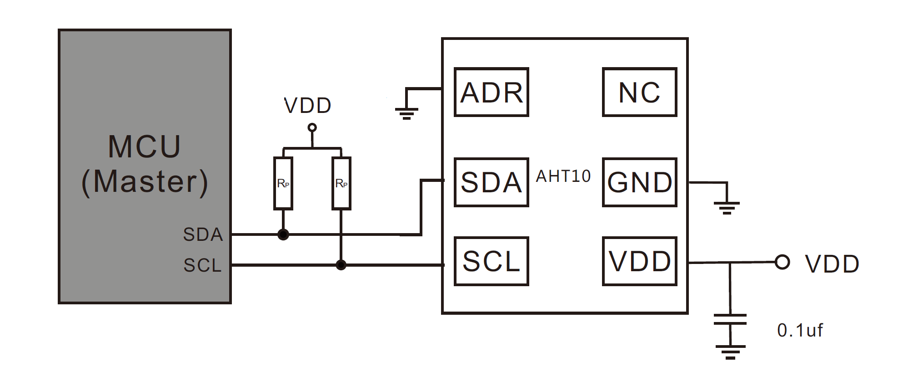
รูป: ตัวอย่างการเชื่อมต่อด้วยบัส I2C กับอุปกรณ์ที่ทำหน้าที่เป็น I2C Master เช่น ไมโครคอนโทรลเลอร์
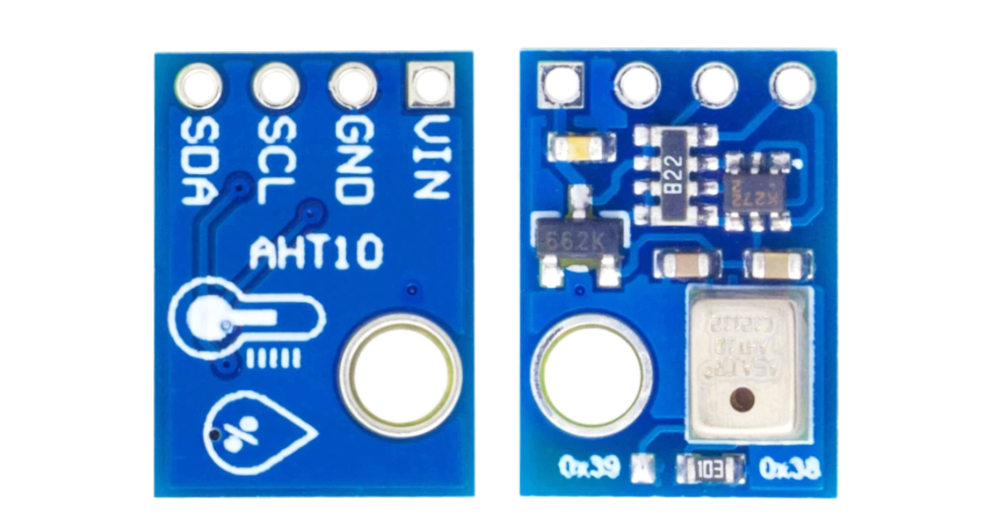
รูป: ตัวอย่างโมดูล AHT10 (มีตัวต้านทานแบบ SMD บัดกรีไว้เพื่อเลือกแอดเดรส)
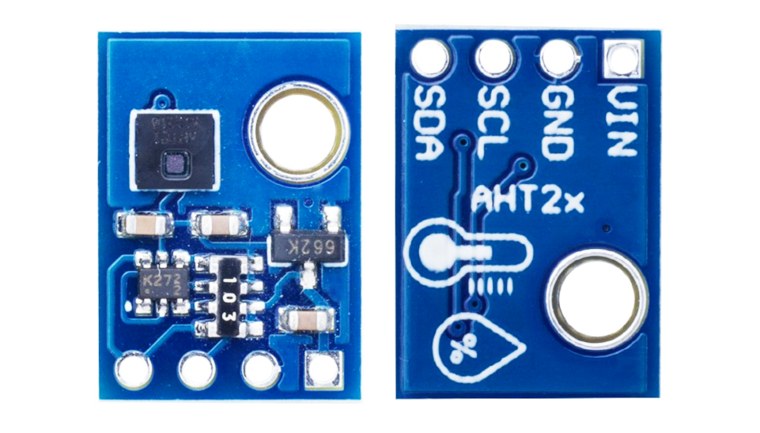
รูป: ตัวอย่างโมดูล AHT2x มีไอซี AHT21 และใช้แอดเดรส 0x38 แต่ไม่สามารถเลือกแอดเดรสได้
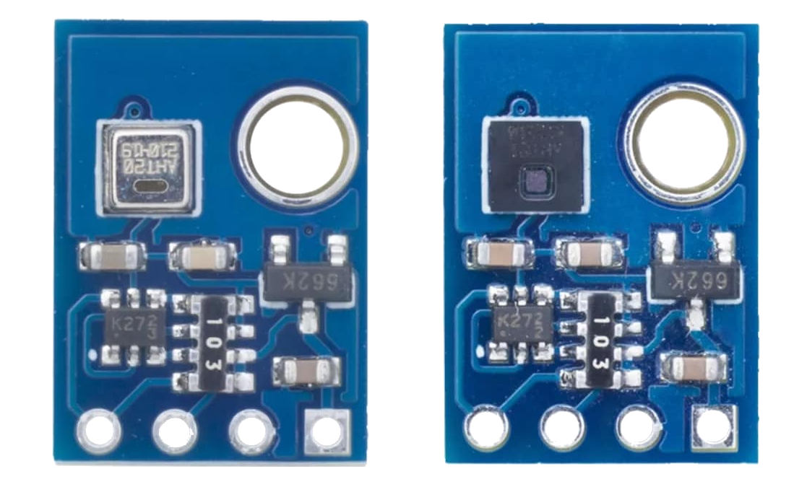
รูป: ตัวอย่างโมดูล AHT20 (ซ้าย) และ AHT21 (ขวา)
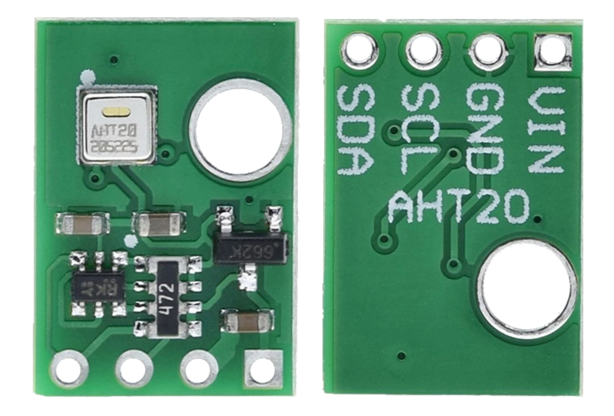
รูป: ตัวอย่างโมดูล AHT20
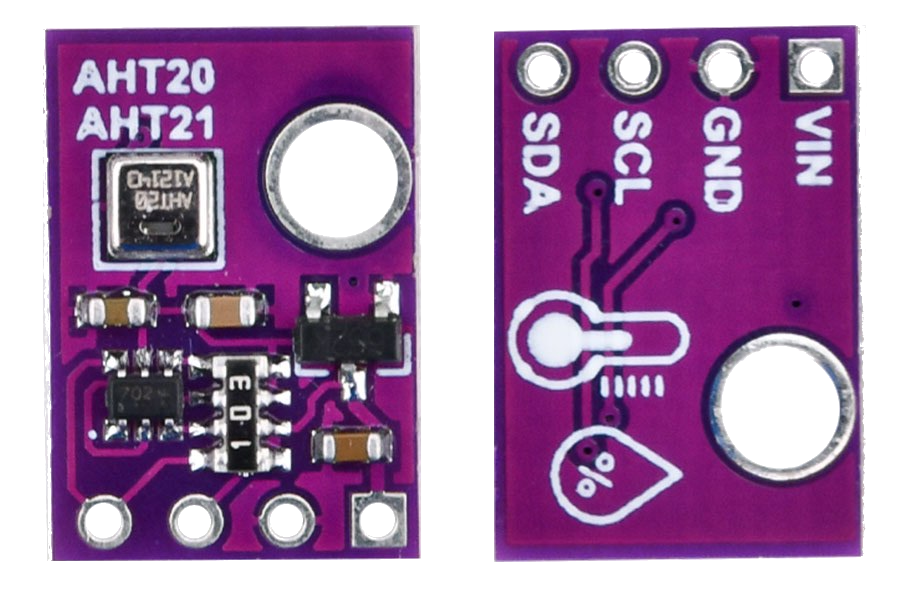
รูป: ตัวอย่างโมดูล AHT20
ข้อสังเกต: โมดูล AHT10 / AHT2x ที่ได้เลือกมาเป็นตัวอย่างมีการใช้ไอซี 662K สำหรับ 3.3V LDO Voltage Regulator มีไอซี K27 (Dual N-Channel MOSFETs) และตัวตานทานแบบ R-Pack (เช่น 4.7k หรือ 10k) สำหรับการสร้างวงจรที่ใช้ทรานซิสเตอร์แปลงระดับแรงดันลอจิกที่ขาสัญญาณ I2C (SCL/SDA)
ในกรณีที่ต้องการใช้งานโมดูลเซนเซอร์ร่วมกับบอร์ด Arduino Uno / Nano (5V) แต่ตัวไอซี AHT10 จะทำงานที่แรงดันไฟเลี้ยง 3.3V (ไม่เกิน 3.6V) ดังนั้นจึงต้องมีการแปลงระดับแรงดันไฟฟ้าของสัญญาณ ระหว่าง 5V กับ 3.3V (Logic Voltage Levels) แต่ถ้าเป็น AHT2x จะรับช่วงแรงดันไฟเลี้ยงได้ถึง +5V
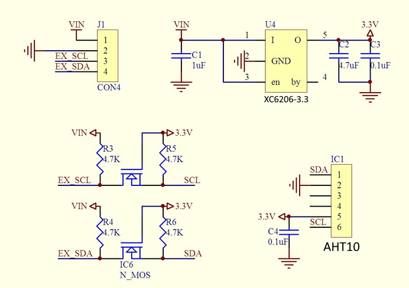
รูป: ตัวอย่างผังวงจรของโมดูล AHT10
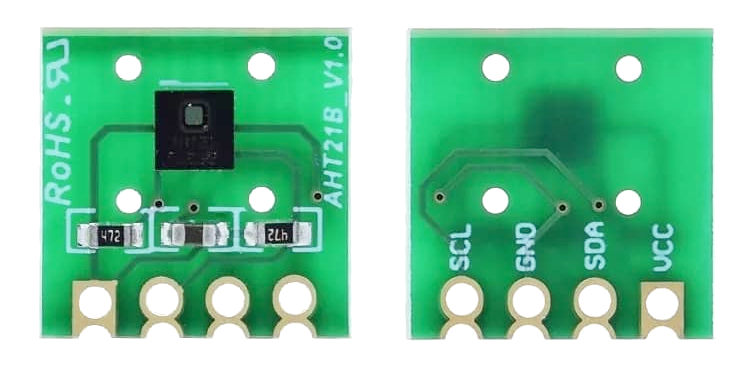
รูป: ตัวอย่างโมดูล AHT21B (ไม่มี 3.3V Voltage Regulator) และสามารถใช้แรงดันไฟเลี้ยง +5V สำหรับบอร์ด Arduino Uno/Nano หรือใช้ +3.3V สำหรับบอร์ดไมโครคอนโทรลเลอร์ เช่น ESP32 และ RP2040
ในปัจจุบันก็มีหลายบริษัทได้ผลิตและจำหน่ายโมดูล AHT2x และได้พัฒนาไลบรารีสำหรับการเขียนโปรแกรมด้วย Arduino ให้เลือกใช้งาน ได้แก่
- Adafruit AHTX0 Library
- Seeed Arduino AHT20 Library
- DFRobot AHT20 Library
- SparkFun Qwiic Humidity AHT20 Library
- Thinary AHT10/AHT20/AHT21 Library
- Enjoyneering's AHT1/ATH2x Library
โค้ดของไลบรารีสำหรับ MicroPython / CircuitPython ใน Github ก็มีเช่นกัน
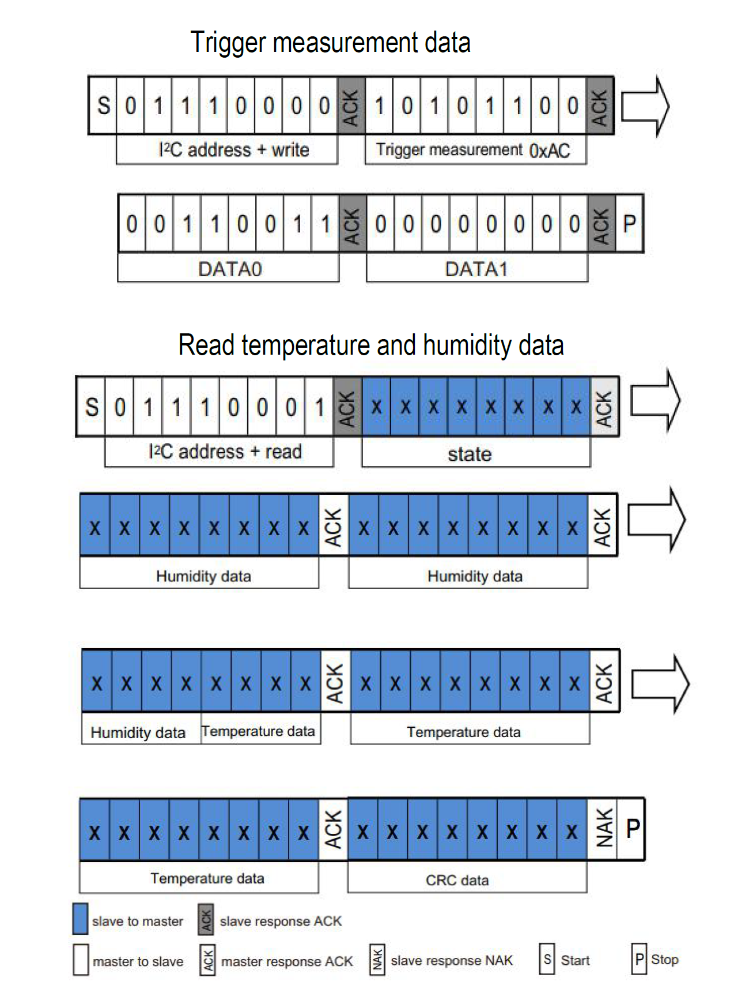
รูป: การส่งคำสั่งเพื่ออ่านค่าจากเซนเซอร์ผ่านทางบัส I2C สำหรับ AHT2x (อ้างอิงจาก AHT21 Datasheet)
จากรูปจะเห็นได้ว่า ถ้าต้องการอ่านค่าจากเซนเซอร์ ก็ให้ส่งคำสั่ง Trigger Measurement Command
ที่ประกอบด้วย 4 ไบต์ ตามลำดับไปยังเซนเซอร์ โดยที่ไบต์แแรกเป็น 7-bit address + Write bit
แล้วจึงตามด้วย 0xAC (CMD), 0x33 (DATA1), 0x00 (DATA2) ตามลำดับ
หลังจากนั้นจะต้องรออย่างน้อย 80 msec จึงอ่านข้อมูลจำนวน 6 ไบต์ (สำหรับ AHT10) โดยที่ข้อมูลไบต์แรก เป็น State Bits แล้วตามด้วยข้อมูลอีก 5 ไบต์ (หรือ 40 บิต) แบ่งเป็นค่าความชื้นสัมพัทธ์ () และค่าอุณหภูมิ () อย่างละ 20 บิต ซึ่งสามารถนำไปแปลงค่าตามสูตรต่อไปนี้
แต่ถ้าเป็น AHT2x จะมีอีกหนึ่งไบต์ (CRC8 Checksum Byte) ซึ่งจะใช้สำหรับตรวจสอบความถูกต้องด้วยวิธีการคำนวณค่า CRC8 Checksum ตามรูปแบบของ Dallas/Maxim
▷ ตัวอย่างโค้ดสำหรับ Arduino#
โค้ดตัวอย่างแรกสาธิตการตรวจสอบดูว่า มีอุปกรณ์ I2C Slave Devices ที่เชื่อมต่อกับ บัส I2C อยู่หรือไม่ โดยจะแสดงเลขแอดเดรส (ฐานสิบหก) ของอุปกรณ์
// Author: RSP @ KMUTNB
// Date: 2022-08-21
// Target: Arduino ESP32 or Uno/Nano
#include <Wire.h>
// Select I2C Pins for ESP32
#define I2C_SDA_PIN (33)
#define I2C_SCL_PIN (32)
void setup() {
Serial.begin( 115200 );
while (!Serial) { delay(10); }
Serial.println( "\n\n\n" );
// __DATE__ and __TIME__ expand to current date and time (at compile time).
Serial.println( "Compiled on " __DATE__ ", at " __TIME__ );
// set I2C pins for ESP32
#if defined(ESP32)
Serial.println( "Set I2C pins for ESP32" );
Wire.begin( I2C_SDA_PIN, I2C_SCL_PIN );
#else
Wire.begin();
#endif
Wire.setClock( 100000 ); // 100kHz
}
#define LINE_SEP "--------------------"
void i2c_scan() {
char sbuf[32];
int n_devices = 0;
Serial.println( F("Scanning I2C bus...") );
Serial.print( " " );
for ( uint8_t col=0; col < 16; col++ ) {
sprintf( sbuf, "%3x", col );
Serial.print( sbuf );
}
Serial.println( "" );
uint8_t addr=0;
for( uint8_t row=0; row < 8; row++ ) {
sprintf( sbuf, "%02x:", row << 4 );
Serial.print( sbuf );
for ( uint8_t col=0; col < 16; col++ ) {
if ( row==0 && addr<=1 ) {
Serial.print(" ");
} else {
Wire.beginTransmission( addr );
if ( Wire.endTransmission() > 0 ) {
Serial.print( " --" );
} else {
sprintf( sbuf, " %2x", addr );
Serial.print( sbuf );
n_devices++;
}
}
addr++;
}
Serial.println( "" );
}
Serial.println( LINE_SEP LINE_SEP LINE_SEP );
Serial.flush();
}
void loop() {
i2c_scan();
delay(5000);
}
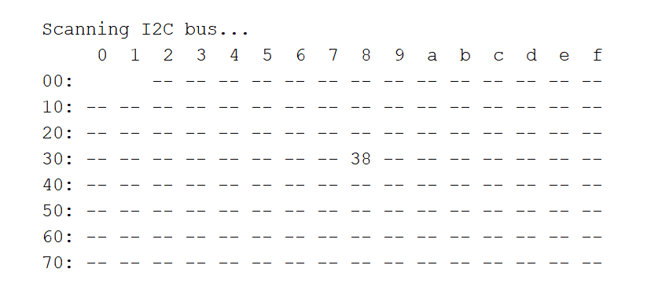
รูป: ตัวอย่างข้อความเอาต์พุต ซึ่งแสดงให้เห็นว่า มีการตรวจพบอุปกรณ์หมายเลข0x38 ที่กำลังเชื่อมต่ออยู่
ถัดไปเป็นตัวอย่างการเขียนโค้ด Arduino สำหรับ ESP32 หรือ Arduino Uno/Nano เพื่ออ่านค่าจากโมดูลเซนเซอร์ AHT2x
ถ้าเป็น ESP32 ได้เลือกใช้ขาตามความเหมาะสม เช่น GPIO-32 และ GPIO-33 ในตัวอย่างนี้ แต่ถ้าเป็น Arduino จะเป็นขา A4 และ A5 สำหรับสัญญาณ SCL และ SDA ตามลำดับ
ในโค้ดตัวอย่างนี้ ได้มีการสร้างฟังก์ชันเพื่อใช้งานกับ AHT2x ดังนี้
aht2x_init()เริ่มต้นใช้งานอุปกรณ์ (Device Initialization) โดยส่งคำสั่งไปยังอุปกรณ์และเปิดการตั้งค่าชดเชย (Calibration Enabled)aht2x_crc8()ตรวจสอบความถูกต้องของข้อมูลไบต์ในอาร์เรย์ที่ได้รับมา โดยเปรียบเทียบกับข้อมูลไบต์สำหรับ CRC8 Checksumaht2x_read_sensor()สั่งให้อุปกรณ์ทำการวัดแล้วอ่านค่าความชื้นสัมพัทธ์และอุณหภูมิ
#include <Wire.h>
// Select I2C Pins for ESP32
#define I2C_SDA_PIN (33)
#define I2C_SCL_PIN (32)
// Note: use A4/A5 for SDA/SCL pins for Arduino Uno/Nano boards.
#define AHT2X_ADDR (0x38) // 0x38 or 0x39
const uint8_t AHT2X_CALIB_CMD[3] = {0xBE, 0x08, 0x00};
const uint8_t AHT2X_MEASURE_CMD[3] = {0xAC, 0x33, 0x00};
void aht2x_init() {
Wire.beginTransmission( AHT2X_ADDR );
Wire.write( AHT2X_CALIB_CMD, 3 );
Wire.endTransmission();
}
uint8_t aht2x_crc8( uint8_t *data, int len ) {
// Calculate CRC8 checksum (Dallas/Maxim).
// The initial value of CRC is 0xFF.
// The CRC polynomial: X^8 + X^5 + X^4 + 1 => 0b00110001 (0x31)
uint8_t crc = 0xff;
for ( uint8_t j=0; j < len; j++ ) {
crc ^= data[j];
for ( uint8_t i=0; i < 8; i++ ) {
if (crc & 0x80) {
crc = (crc << 1) ^ 0x31;
} else {
crc = (crc << 1);
}
}
}
return crc;
}
bool aht2x_read_sensor( float *humidity, float *temperature ) {
Wire.beginTransmission( AHT2X_ADDR );
Wire.write( AHT2X_MEASURE_CMD, 3 );
Wire.endTransmission();
// After the host sends a trigger-measurement command (0xAC),
// a delay of 80+ msec is necessary before reading the data.
delay(100);
Wire.requestFrom( AHT2X_ADDR, 7 );
if ( Wire.available() >= 7 ) { // expect 7 bytes from the sensor
uint8_t buf[7] = {0};
for( int i=0; i < 7; i++ ) {
buf[i] = Wire.read();
}
uint8_t crc8 = buf[6];
if ( buf[0] & 0x80 ) {
Serial.println( "AHT2x is busy!" );
return false; // failed
}
if ( aht2x_crc8( buf, 6 ) != crc8 ) {
Serial.println( "CRC8 check failed!" );
*humidity = 0.0;
*temperature = 0.0;
return false; // failed
} else {
uint32_t value;
// 20-bit raw value for humidity
value = buf[1];
value = (value << 8) | buf[2];
value = (value << 8) | buf[3];
value >>= 4;
*humidity = (100.0*value)/(1UL<<20);
// 20-bit raw value for temperature
value = (buf[3] & 0x0F);
value = (value << 8) | buf[4];
value = (value << 8) | buf[5];
*temperature = ((200.0*value)/(1UL<<20)) - 50;
return true; // ok
}
}
return false;
}
void setup() {
Serial.begin(115200);
// show the compile date and time of the sketch.
Serial.println( "\n\nCompiled on " __DATE__ ", at " __TIME__ );
#if defined(ESP32)
Serial.println( "Set I2C pins for ESP32" );
Wire.begin( I2C_SDA_PIN, I2C_SCL_PIN );
#else
Wire.begin();
#endif
Wire.setClock( 400000 ); // Set I2C speed to 400kHz.
aht2x_init(); // Initialize the AHT2x.
delay(500);
}
void loop() {
float t, rh;
if ( aht2x_read_sensor( &rh, &t ) ) {
#if defined(__AVR__)
Serial.print( "H: " );
Serial.print( rh, 1 ); // only 1 digit after the decimal point
Serial.print( " %RH, T: " );
Serial.print( t, 1 ); // only 1 digit after the decimal point
Serial.println( " deg.C" );
#endif
#if defined(ESP32)
Serial.printf( "H: %.1f %%RH, T: %.1f deg.C\n", rh, t );
#endif
}
delay(5000);
}
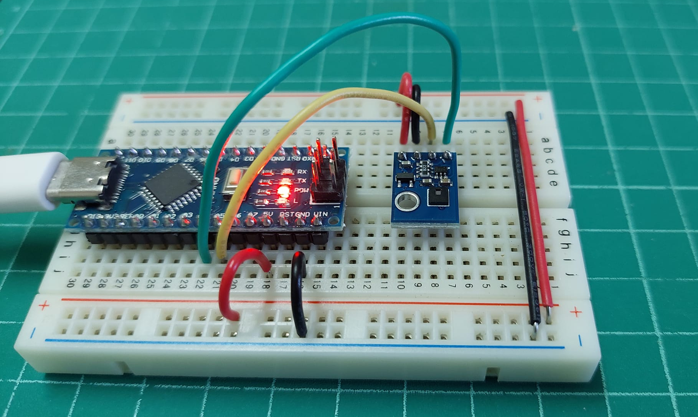
รูป: การต่อวงจรทดลองร่วมกับบอร์ด Arduino Nano (ใช้แรงดันไฟเลี้ยง +5V สำหรับโมดูล AHT21)
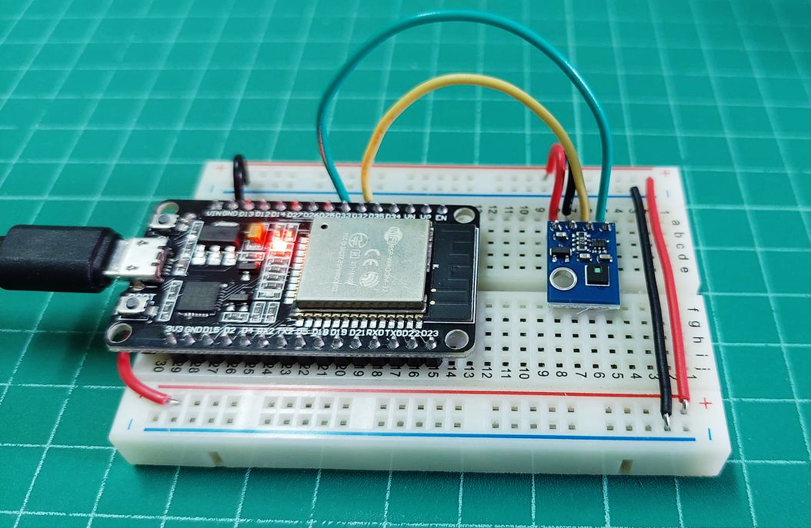
รูป: การต่อวงจรทดลองร่วมกับบอร์ด ESP32 (ใช้แรงดันไฟเลี้ยง +3.3V สำหรับโมดูล AHT21)
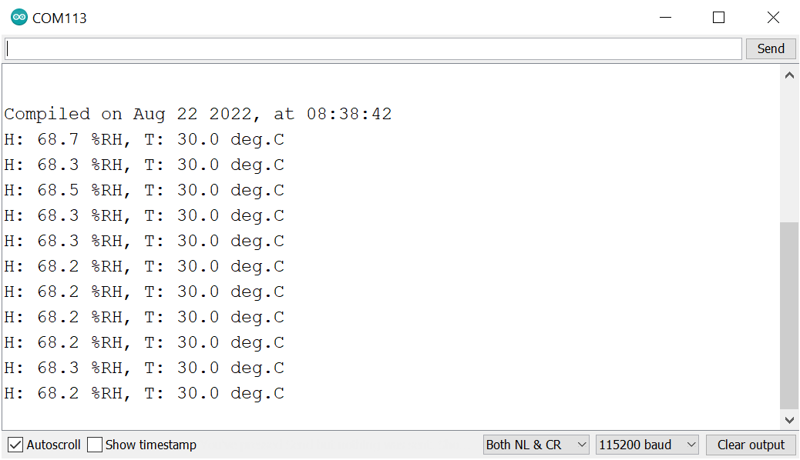
รูป: ตัวอย่างข้อความเอาต์พุตที่แสดงผลใน Arduino Serial Monitor
▷ ตัวอย่างโค้ดสำหรับ Arduino ESP32#
ตัวอย่างถัดไปสาธิตการสร้างคลาสชื่อ AHT2x ในภาษา C++
และเก็บไว้ในไฟล์ aht2x.h เพื่อให้ง่ายต่อการนำมาใช้งานโมดูล AHT2x
// File: aht2x.h
#pragma once
#include <Arduino.h>
#include <Wire.h>
class AHT2x {
private:
uint8_t addr;
static const uint8_t AHT2X_CALIB_CMD[3];
static const uint8_t AHT2X_MEASURE_CMD[3];
public:
static const uint8_t AHT2X_DEF_ADDR = 0x38; // 0x38 or 0x39
AHT2x(uint8_t _addr = AHT2x::AHT2X_DEF_ADDR)
: addr(_addr) {
// empty
}
void init() {
Wire.beginTransmission( addr );
Wire.write( AHT2x::AHT2X_CALIB_CMD, 3 );
Wire.endTransmission();
}
static uint8_t crc8( uint8_t *data, int len ) {
// calculate CRC8 (Dallas/Maxim)
// The initial value of CRC is 0xFF.
// The CRC polynomial: X^8 + X^5 + X^4 + 1 => 0b00110001 (0x31)
uint8_t crc = 0xff;
for ( uint8_t j=0; j < len; j++ ) {
crc ^= data[j];
for ( uint8_t i=0; i < 8; i++ ) {
if (crc & 0x80) {
crc = (crc << 1) ^ 0x31;
} else {
crc = crc << 1;
}
}
}
return crc;
}
bool read( float *humidity, float *temperature ) {
Wire.beginTransmission( addr );
Wire.write( AHT2x::AHT2X_MEASURE_CMD, 3 );
Wire.endTransmission();
// After the host sends a trigger-measurement command (0xAC),
// a delay of 80+ msec is necessary before reading the data.
delay(100);
Wire.requestFrom( (int)addr, 7 );
if ( Wire.available() >= 7 ) { // expect 7 bytes from the sensor
uint8_t buf[7] = {0};
for( int i=0; i < 7; i++ ) {
buf[i] = Wire.read();
}
uint8_t crc8 = buf[6];
if ( buf[0] & 0x80 ) { // AHT2x busy
return false; // failed
}
if ( AHT2x::crc8( buf, 6 ) != crc8 ) { // CRC8 failed
*humidity = 0.0;
*temperature = 0.0;
return false; // failed
} else {
uint32_t value;
// 20-bit raw value for humidity
value = buf[1];
value = (value << 8) | buf[2];
value = (value << 8) | buf[3];
value >>= 4;
*humidity = (100.0*value)/(1UL<<20);
// 20-bit raw value for temperature
value = (buf[3] & 0x0F);
value = (value << 8) | buf[4];
value = (value << 8) | buf[5];
*temperature = ((200.0*value)/(1UL<<20)) - 50;
return true; // ok
}
}
return false;
}
};
const uint8_t AHT2x::AHT2X_CALIB_CMD[3] = {0xBE, 0x08, 0x00};
const uint8_t AHT2x::AHT2X_MEASURE_CMD[3] = {0xAC, 0x33, 0x00};
ถัดไปเป็นตัวอย่างการเขียนโค้ด Arduino Sketch สำหรับ ESP32
และมีการสร้างอ็อบเจกต์จากคลาส AHT2x เพื่อใช้ในการอ่านข้อมูลจากโมดูลเซนเซอร์ AHT20
และนำไปใช้กับบอร์ดไมโครคอนโทรลเลอร์ ESP32 (WeMos Lolin32 Lite Board)
// File: esp32_aht2x_demo.ino
// Date: 2023-11-13
#include "aht2x.h"
// Select I2C Pins for ESP32.
#define I2C_SDA_PIN (16)
#define I2C_SCL_PIN (17)
// Set time interval (in msec) for sensor readings
#define INTERVAL_MSEC (4000)
AHT2x aht2x; // Create an object from the AHT2x class.
void setup() {
// Initialize the serial port.
Serial.begin(115200);
// Show the compile date and time of the sketch.
Serial.println( "\n\nCompiled on " __DATE__ ", at " __TIME__ );
Serial.println( "Set I2C pins for ESP32..." );
// Set the I2C speed and initialize the I2C bus.
Wire.begin( I2C_SDA_PIN, I2C_SCL_PIN, 400000 );
Serial.printf( "I2C clock frequency: %lu\n", Wire.getClock() );
Serial.printf( "I2C timeout: %u msec\n", Wire.getTimeOut() );
// Initialize the AHT2x sensor.
aht2x.init();
delay(500);
}
void loop() {
static uint32_t ts;
uint32_t now = millis();
if ( now - ts >= INTERVAL_MSEC ) {
float t, rh;
ts = now;
// Read sensor values from the AHT2x.
if ( aht2x.read( &rh, &t ) ) { // ok
Serial.printf( "T: %.1f deg.C, H: %.1f %%RH\n", t, rh );
} else { // error
Serial.printf( "AHT2x reading error!\n" );
}
}
}
▷ ตัวอย่างโค้ดสำหรับ Arduino ESP32 + SH1106 OLED#
ตัวอย่างถัดไปสาธิตการใช้งานโมดูลเซนเซอร์ AHT2x
และโมดูล SH1106 OLED (Organic LED) ขนาด 1.3" (128x64 pixels)
โดยเลือกใช้งานไลบรารีที่มีชื่อว่า
esp8266-oled-ssd1306
ทั้งสองอุปกรณ์ใช้วิธีเชื่อมต่อแบบ I2C และมีแอดเดรสสำหรับ I2C Slave Devices
ที่แตกต่างกัน
// File: esp32_aht2x_sh1106_oled_demo.ino
// Date: 2023-11-13
#include <Wire.h>
#include "aht2x.h"
#include "SH1106Wire.h" // The library must be already installed.
// see: https://github.com/ThingPulse/esp8266-oled-ssd1306/
// Select I2C Pins for ESP32.
#define I2C_SDA_PIN (16)
#define I2C_SCL_PIN (17)
// Set the update interval (in msec) for AHT2x sensor.
#define INTERVAL_MSEC (4000)
#define AHT2x_I2C_ADDR (0x38)
#define OLED_I2C_ADDR (0x3C)
// Create an object from the AHT2x class.
AHT2x aht2x( AHT2x_I2C_ADDR );
// Create an object from the SH1106Wire class.
SH1106Wire display( OLED_I2C_ADDR, -1 /*sda*/, -1 /*scl*/,
GEOMETRY_128_64, I2C_ONE /*Wire*/, -1 );
void initOLED() {
display.init();
display.flipScreenVertically();
display.clear();
display.setFont( ArialMT_Plain_16 );
display.setTextAlignment( TEXT_ALIGN_CENTER );
display.drawString( 64, 8, String("ESP32 Demo") );
display.drawString( 64, 32, String("SH1106 OLED") );
display.display();
}
void setup() {
// Initialize the serial port.
Serial.begin(115200);
// Show the compile date and time of the sketch.
Serial.println( "\n\nCompiled on " __DATE__ ", at " __TIME__ );
Serial.println( "Set I2C pins for ESP32..." );
// Set the I2C speed and initialize the I2C bus.
Wire.begin( I2C_SDA_PIN, I2C_SCL_PIN );
// Initialize the OLED display.
initOLED();
// Initialize the AHT2x sensor.
aht2x.init();
delay(500);
}
void loop() {
static uint32_t ts;
uint32_t now = millis();
if ( now - ts >= INTERVAL_MSEC ) {
float t, rh;
ts = now;
String line1 = "T: ", line2 = "H: ";
// Read sensor values from the AHT2x.
if ( aht2x.read( &rh, &t ) ) { // ok
Serial.printf( "T: %.1f deg.C, H: %.1f %%RH\n", t, rh );
line1 += t;
line1 += " deg.C";
line2 += rh;
line2 += " %RH";
} else { // error
Serial.printf( "AHT2x reading error!\n" );
line1 += "--.- deg.C";
line2 += "--.- %RH";
}
display.clear();
display.drawString( 64, 8, line1 );
display.drawString( 64, 32, line2 );
display.display();
}
}
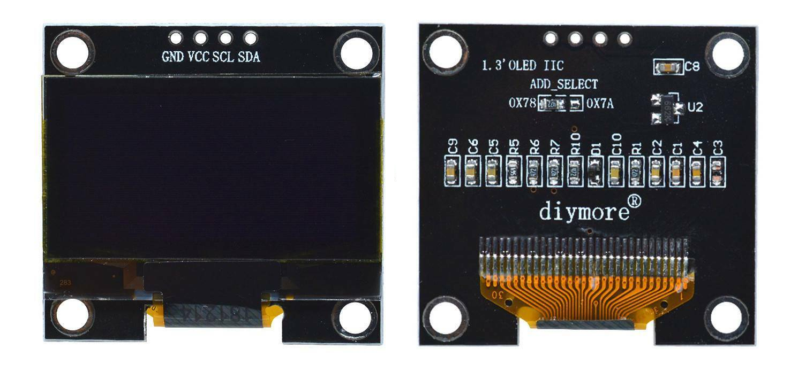
รูป: โมดูล OLED + SH1106 Driver ขนาด 1.3 นิ้ว (128 x 64 พิกเซล) สามารถใช้แรงดันไฟเลี้ยง 3.3V หรือ 5V ได้ (มีไอซี XC6206 3.3V LDO และมีตัวต้านทาน 4.7k แบบ Pull-up ที่ขา SCL และ SDA ไปยังไฟเลี้ยง 3.3V)
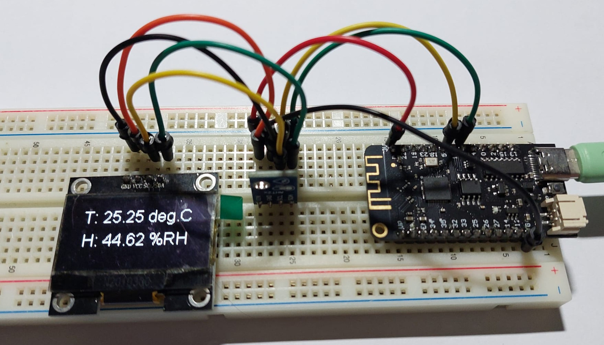
รูป: ตัวอย่างการต่อวงจรทดลองสำหรับโมดูล AHT21
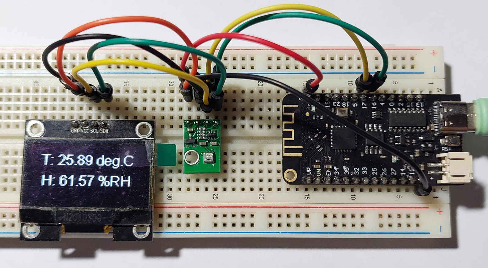
รูป: ตัวอย่างการต่อวงจรทดลองสำหรับโมดูล AHT20
แต่ถ้าจะลองใช้ไลบรารี Adafruit_SH110X
ของบริษัท Adafruit ก็มีตัวอย่างโค้ดดังนี้
#include <Wire.h>
#define SH110X_NO_SPLASH
#include <Adafruit_GFX.h>
#include <Adafruit_SH110X.h>
// see: https://github.com/adafruit/Adafruit_SH110x
#include "aht2x.h"
// Select I2C Pins for ESP32
#define I2C_SDA_PIN (16)
#define I2C_SCL_PIN (17)
#define INTERVAL_MSEC (4000)
#define AHT2x_I2C_ADDR (0x38)
#define OLED_I2C_ADDR (0x3C)
#define SCREEN_WIDTH (128)
#define SCREEN_HEIGHT (64)
// Create an object from the Adafruit_SH1106G class.
Adafruit_SH1106G display( SCREEN_WIDTH, SCREEN_HEIGHT,
&Wire, -1, 100000, 100000 );
// Create an object from the AHT2x class.
AHT2x aht2x( AHT2x_I2C_ADDR );
void showCenteredText( int ypos, const String &text ) {
int16_t x, y;
uint16_t text_h, text_w;
display.getTextBounds(text, 0, 0, &x, &y, &text_w, &text_h);
int xpos = (SCREEN_WIDTH - text_w) / 2;
display.setCursor(xpos, ypos);
display.println(text);
}
void initOLED() {
if( !display.begin(OLED_I2C_ADDR, false) ) {
Serial.println( "OLED init failed!" );
for(;;) delay(10);
}
display.clearDisplay();
display.setTextSize(1);
display.setTextColor( SH110X_WHITE );
showCenteredText( 16, String("ESP32 Demo") );
showCenteredText( 32, String("SH1106 OLED") );
display.display();
delay(2000);
}
void setup() {
// Initialize the serial port.
Serial.begin(115200);
// Show the compile date and time of the sketch.
Serial.println( "\n\nCompiled on " __DATE__ ", at " __TIME__ );
Serial.println( "Set I2C pins for ESP32..." );
// Set the I2C speed and initialize the I2C bus.
Wire.begin( I2C_SDA_PIN, I2C_SCL_PIN );
//Wire.setClock( 400000 );
// Initialize the OLED display.
initOLED();
// Initialize the AHT2x sensor.
aht2x.init();
delay(500);
}
void loop() {
static uint32_t ts;
uint32_t now = millis();
if ( now - ts >= INTERVAL_MSEC ) {
float t, rh;
ts = now;
String line1 = "T: ", line2 = "H: ";
// Read sensor values from the AHT2x.
if ( aht2x.read( &rh, &t ) ) { // ok
Serial.printf( "T: %.1f deg.C, H: %.1f %%RH\n", t, rh );
line1 += t;
line1 += " deg.C";
line2 += rh;
line2 += " %RH";
} else { // error
Serial.printf( "AHT2x reading error!\n" );
line1 += "--.- deg.C";
line2 += "--.- %RH";
}
display.clearDisplay();
showCenteredText( 16, line1 );
showCenteredText( 32, line2 );
display.display();
}
}
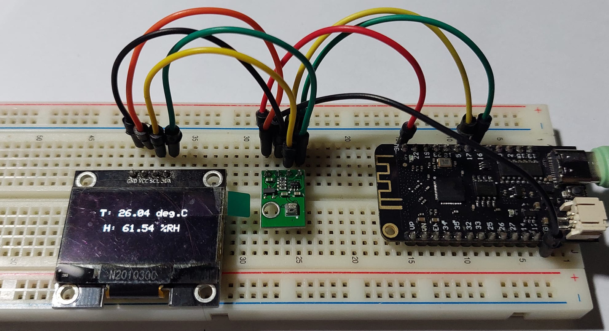
รูป: ตัวอย่างการต่อวงจรทดลองโดยเลือกใช้ไลบรารี Adafruit_SH110X
▷ กล่าวสรุป#
บทความนี้ได้นำเสนอการใช้งานโมดูลที่มีไอซี AHT2x ซึ่งเป็นเซนเซอร์สำหรับการวัดค่าความชื้นสัมพัทธ์ และอุณหภูมิ โดยนำมาทดลองใช้งานร่วมกับบอร์ดไมโครคอนโทรลเลอร์ ESP32 และ Arduino Nano และเขียนโปรแกรมด้วย Arduino IDE
This work is licensed under a Creative Commons Attribution-ShareAlike 4.0 International License.
Created: 2022-08-21 | Last Updated: 2023-11-13